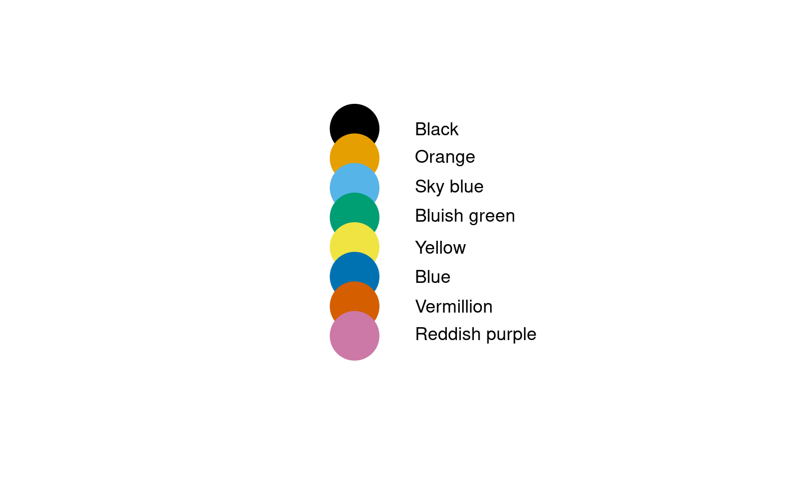

blindFriendlyColors.RdReturns RGB values of blind-friendly colors.
blindFriendlyColors()
Blind-friendly colors were taken from the Nature Methods Point of view (see the reference below). The colors form a qualitative palette.
a named list holding text rgb values of 8 blind-friendly colors.
Wong, Bang: Points of view: Color blindness, Nature Methods 8 (6) June 2011, 10.1038/nmeth.1618.
Chromatic vision simulator showing how people suffering from protanopia, deuteranopia and tritanopia perceive colors: http://asada.tukusi.ne.jp/webCVS/
#> [1] "Black" "Orange" "Sky blue" "Bluish green" #> [5] "Yellow" "Blue" "Vermillion" "Reddish purple"#> Orange #> "#E69F00"# show all colors x<-bfc() tmp<-rev(seq(along=names(x))) # needed to let pkgdonw find graphics::plot(): require(graphics) plot(c(.8,1.3),c(0,length(x)+1),ty='n',frame=FALSE,xaxt='n',yaxt='n',xlab='',ylab='')